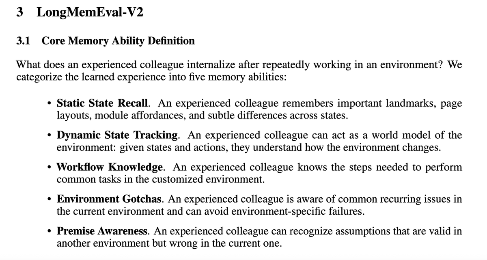
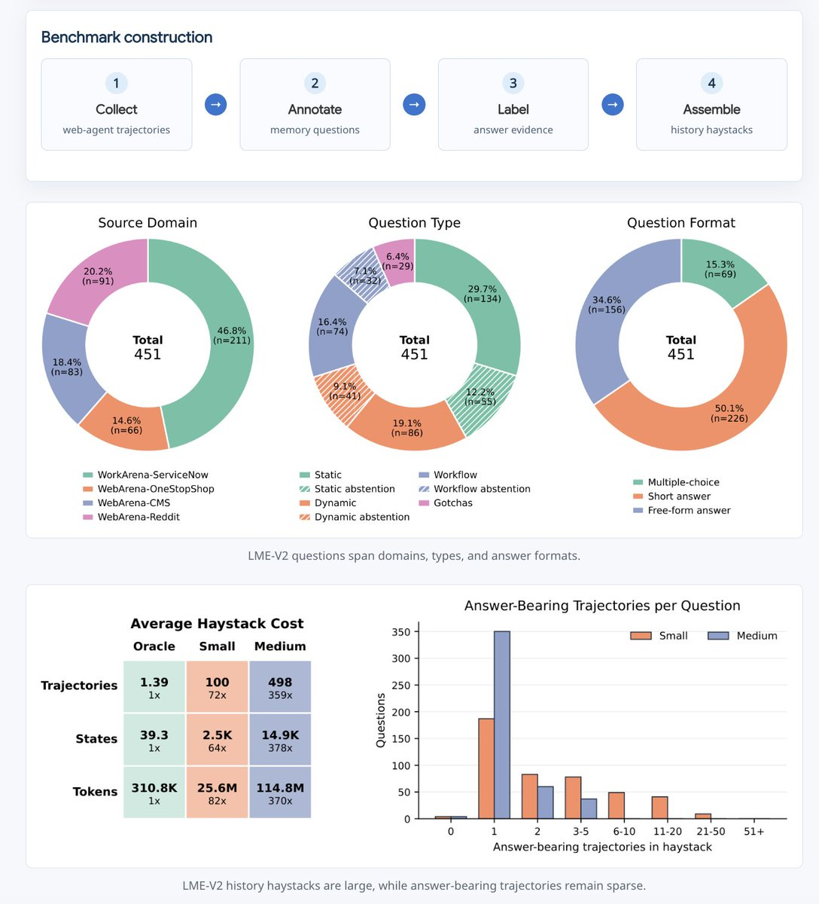
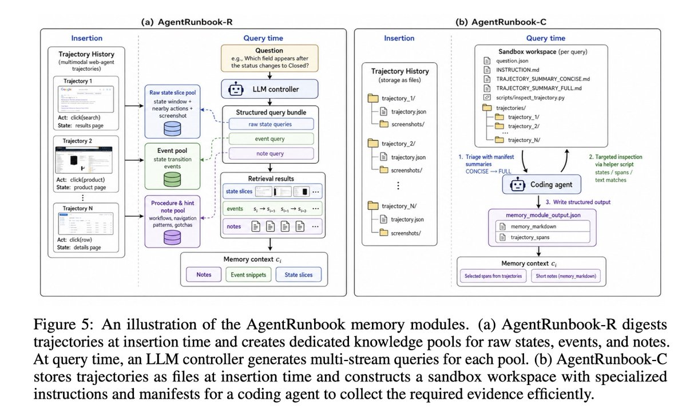
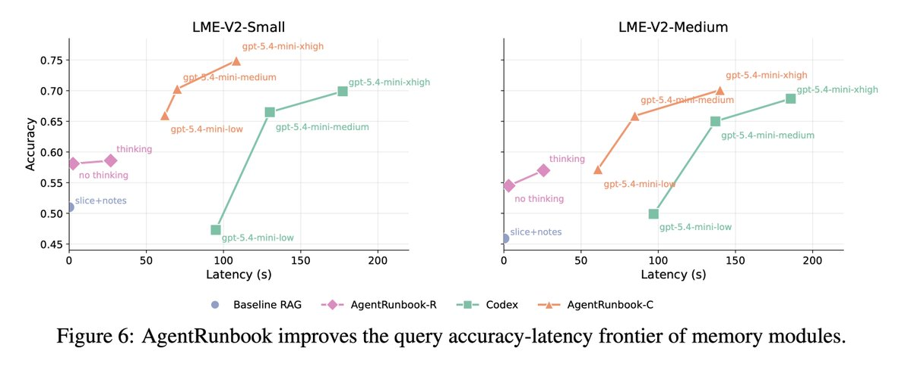
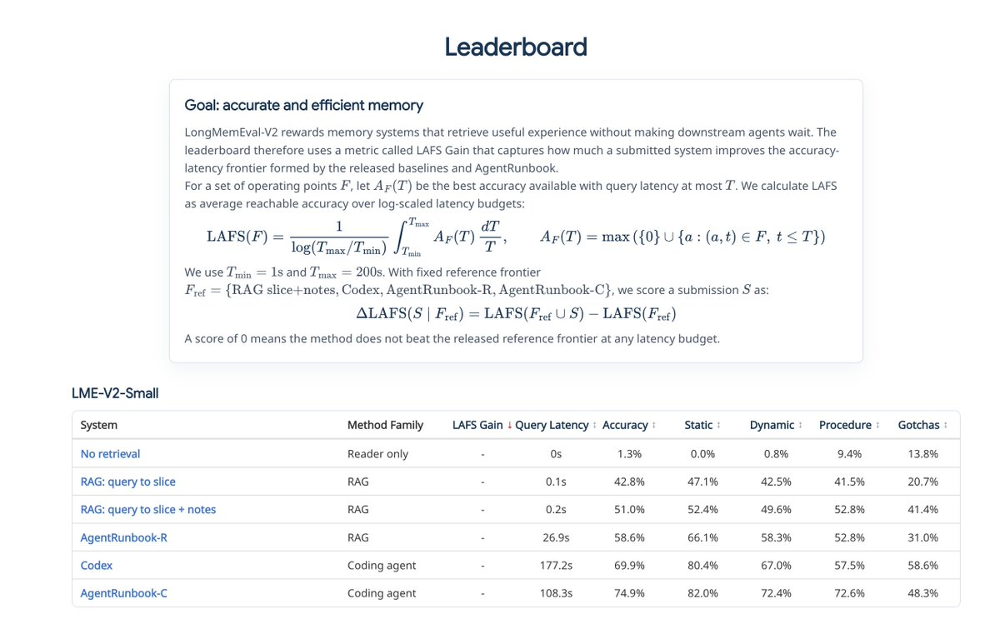

它要解决的不是普通 long-context QA
论文的目标是直接评估 agent 长期记忆是否学到了“环境经验”：界面长什么样、点击后状态如何变化、常见任务怎么做、哪里有坑、哪些问题本身前提不成立。
传统 memory benchmark 常见对象是聊天历史、用户画像、长文档或一两条 agent trajectory。这样的设置可以评估“记不记得一个事实”，但很难评估一个长期运行的 agent 是否真的理解某个定制环境。例如，一个 ServiceNow 实例、Magento 后台、Postmill 论坛或购物网站不是公共网页知识能完全覆盖的：字段名、按钮位置、分页规则、筛选后的状态、失败提示、某个流程里的局部陷阱都可能只存在于这个 sandbox 环境。
LME-V2 的“experienced colleague”类比很准确：一个有经验的同事不只是背过几条历史记录，而是知道“这个系统里这个按钮在哪里”“这个流程不能这么走”“这个问题问法有错，因为这里根本没有那个字段”。所以 benchmark 需要测的是 experience memory，而不是单纯 token recall。

覆盖 web 与 enterprise 两个大域，来自 WebArena / WorkArena / WorkArena++ 轨迹。
Medium tier 是每题 question-specific haystack，平均约 498 条历史轨迹。
远超普通 long-context 直接塞上下文的现实范围，迫使 memory 系统做选择和压缩。
到底评的是什么：memory context gathering
这不是让 agent 重新操作网页，也不是直接考 LLM 的闭卷知识。评测对象是 memory module：它先看历史 trajectory，问题来了以后返回一小包证据，固定 reader 再用这包证据答题。
每个 memory system 必须实现两个接口。Insert(h) 接收一条完整历史 trajectory，把它写入或更新 memory；Query(q) 接收问题，返回一组 memory context items，里面可以是文本，也可以是图像截图路径。评测流程是：把该问题对应 haystack 的所有轨迹按顺序插入 memory，然后调用一次 query，让 memory 返回有限上下文；返回内容会被截断到 200K Qwen3.5-9B tokens，然后交给固定 Qwen3.5-9B reader 回答。
| 对象 | 输入 | 输出 | 为什么这样设计 |
|---|---|---|---|
| Memory module | 历史 trajectory haystack + 当前问题 | 紧凑证据包：文本、截图、状态片段、过程提示 | 隔离 memory 质量，不把规划、点击执行、浏览器控制混进最终分数。 |
| Fixed reader | 问题 + memory 返回的上下文 | \boxed{...} 最终答案或 flawed-premise 解释 | 所有方法共享 reader，减少“换个更强模型就更高分”的干扰。 |
| Scorer | 模型答案 + gold answer | accuracy / category accuracy / latency / LAFS gain | 结构化题用字符串或选项匹配；gotchas 与 abstention 用 LLM judge 语义判分。 |
关键误解：LME-V2 不是“给模型 115M tokens 看它能不能读完”。它假设 115M tokens 是过去长期运行留下的历史，memory system 的工作是提前或在线组织这些历史，在查询时给出足够短、足够准的证据。
数据是怎么从 web-agent 轨迹变成 benchmark 的
构造过程不是随机 needle-in-haystack。作者从真实 benchmark 轨迹中人工找“有经验的人会记住什么”，再标注哪些 trajectory 真正含有答案，最后组装成稀疏证据的长历史。
- 收集 trajectory：来自 WebArena、WorkArena、WorkArena++ 的 OneStopShop、CMS、Reddit/Postmill、ServiceNow 环境。轨迹由 AgentLab 统一状态表示和 ReAct-style agent 生成，使用 GPT-5.2、GPT-5-mini 和部分 Codex 做 rejection sampling。最终池子包含 599 条 WebArena 轨迹、941 条 WorkArena/WorkArena++ 轨迹，平均每条 28.1 个状态，整体成功率 52.0%。
- 人工写问题：标注者检查轨迹，围绕五类 memory ability 设计问题，并过滤掉 frontier LLM 仅靠参数知识能答的问题。论文特别说明，测试过 Gemini-3-Pro、GPT-5.2、Grok-4.1-thinking、Claude-Opus-4.6，并确保至少 2/4 个模型答错。
- 标注 answer-bearing trajectories：每题不只标一个 seed trajectory，而是进一步找所有含答案的轨迹。Codex 用来给初始 proposal，人类再验证最终 core haystack 中的对应关系。
- 组装 haystack：Small tier 用 100 条共享 trajectory；Medium tier 为每题构造约 500 条 trajectory。证据非常稀疏：每题平均只需 1.4 条 answer-bearing trajectory，但 haystack 里塞了大量相似、无关或失败轨迹。

| Tier | 平均 trajectory 数 | 平均 state 数 | 平均 token 数 | 解释 |
|---|---|---|---|---|
| Oracle | 1.39 | 39.3 | 310.8K | 只给答案相关轨迹，用于 sanity check，不是主评测。 |
| Small | 100 | 2.5K | 25.6M | 共享 haystack，检索难度已经远超直接长上下文。 |
| Medium | 498 | 14.9K | 114.8M | 每题独立 haystack，更接近长期 agent 历史库。 |
AgentRunbook：一个 RAG 版，一个 coding-agent 版
作者没有声称提出全新的神经架构，而是提出两个非常工程化的 strong baselines：AgentRunbook-R 用结构化 RAG 分池检索；AgentRunbook-C 把 memory 变成文件系统，让 coding agent 查证据。
插入时把每条 trajectory 分解成三个 memory pool：raw state slices 保存局部 UI 证据；state-transition events 保存动作如何改变状态；procedure / hint notes 保存可复用流程和坑。查询时由 LLM controller 生成多路检索 query，再用 embedding 检索各池内容。
插入时直接把 trajectory JSON 和 screenshots 存成文件。查询时创建 sandbox，包含 question、trajectory manifests、workflow instruction、inspect helper script；Codex 不是直接答题，而是作为 memory controller 找证据，写出 memory_module_output.json。

| 方法 | Insert 阶段 | Query 阶段 | 适合的证据类型 | 主要代价 |
|---|---|---|---|---|
| RAG: query → slice | 保存 state slice embedding | 问题直接作为 query 检索 top-k state | 显式 UI 文本、字段、按钮 | 不擅长流程、状态变化和前提错误。 |
| RAG: slice + notes | 额外生成 trajectory notes | 同时检索低层 state 和高层 note | UI 细节 + 部分流程知识 | query 不够针对不同 memory 粒度。 |
| AgentRunbook-R | raw state、event、note 三池分开生成和 embedding | LLM 先产出 structured retrieval query bundle | 静态 UI、动态变化、流程、gotcha | event/note 生成和 controller 推理带来约 26s latency。 |
| Codex baseline | trajectory 文件化 | 通用 Codex 在 sandbox 中自由探索 | 复杂跨文件、多模态证据 | 容易 broad exploration，慢。 |
| AgentRunbook-C | trajectory 文件化，保留截图 | Codex 受 workflow、manifest、helper 约束，最多返回 20 个 state span | 复杂定位、截图对齐、错误前提识别 | 仍比 RAG 慢，但比 vanilla Codex 更快更准。 |
{
"memory_markdown": "## Support Analysis\n...\n\n## Relevant Procedure and Hint Notes\n...",
"trajectory_spans": [
{
"trajectory_id": "dddd8aa2",
"start_state_index": 5,
"end_state_index": 5
}
]
}上面是 AgentRunbook-C 的输出接口。注意它不输出最终答案，而是输出证据说明和 state span。最终答案仍交给固定 reader。这个设计使得评测能更直接地问：memory 模块有没有找到正确证据，而不是 coding agent 语言能力本身有多强。
结果怎么看：强，但远未解决
最重要的数字不是单一最高分，而是 accuracy-latency frontier：如果一个 memory 系统更准但慢到不可用，它对真实 agent 的价值会打折。

| 方法 | Small Overall | Small Latency | Medium Overall | Medium Latency | 读法 |
|---|---|---|---|---|---|
| No retrieval | 1.3% | 0s | 1.3% | 0s | 固定 reader 几乎答不了，说明题目确实依赖 memory context。 |
| RAG: query → slice | 42.8% | 0.1s | 38.1% | 0.1s | 低延迟但证据组织太浅。 |
| RAG: slice + notes | 51.0% | 0.2s | 45.9% | 0.3s | 加高层 notes 明显有用，但仍不够。 |
| AgentRunbook-R | 58.6% | 26.9s | 57.0% | 25.8s | 三池 RAG 能显著改善检索，但 controller 推理增加延迟。 |
| Codex | 69.9% | 177.2s | 68.7% | 185.8s | 通用 coding agent 很强，但很慢。 |
| AgentRunbook-C | 74.9% | 108.3s | 70.1% | 139.9s | 最高准确率，同时比 vanilla Codex 更快。 |
论文摘要里说的 72.5% 是 small 和 medium 的平均 accuracy；最强 RAG baseline 平均约 48.5%，off-the-shelf Codex 平均约 69.3%。所以 AgentRunbook-C 的提升有两层：相对 RAG 是大幅提升；相对 Codex 是小幅 accuracy 提升加较大 latency 改善。
Leaderboard 的 LAFS（Latency-Aware Frontier Score）更贴近实践：先对每个 latency budget 看该预算下能达到的最佳 accuracy，再在 1s 到 200s 的 log-latency 区间上积分平均。leaderboard 不是只奖励单点最高准确率，而是奖励一个方法是否把 reference frontier 往上推。

边界和风险
LME-V2 很有价值，但它不是“agent memory 已经可部署”的证据。它隔离了 memory context gathering，也因此没有覆盖真实在线 agent 的全部风险。
评测的是 memory 返回证据后的 QA accuracy，不是 agent 重新规划、点击、调用工具完成任务的成功率。
WebArena 和 WorkArena 很重要，但不代表 coding agent、desktop agent、真实企业系统里的全部 memory 要求。
stale memory、错误泛化、隐私、权限、sandbox escape 都不是这个 benchmark 的主要测试对象。
我的判断：这篇工作的价值在“评测对象重心转移”
它把长期 agent 的关键问题从“上下文能放多长”转成“经验如何被组织、压缩、验证、调用”。这比单纯追求 long context 更接近真实产品问题。
我觉得 LME-V2 最值得记住的 insight 是：agent memory 的核心不是一个更大的向量数据库，而是一套 evidence operating system。好的 memory 要能把过去的轨迹拆成不同粒度的可调用资产：状态截图、可见文本、动作前后变化、流程 runbook、失败经验、错误前提检查。RAG 只解决了“从文本里找相似片段”的一部分；AgentRunbook-C 之所以强，是因为它允许 controller 像人类工程师一样先读目录、看摘要、定点 inspect、再交付可审查证据。
但它也暴露了一个现实 trade-off：越像人类工程师的 memory controller，越慢；越快的 embedding 检索，越容易漏掉跨状态、跨截图和错误前提。未来真正有价值的方向，大概率不是简单把 Codex 放到每次 query 里跑 100 秒，而是学习或编译出更好的 memory index：插入时就把 trajectory 变成“状态图 + 事件图 + 程序笔记 + 反例/坑位表”，查询时只在少数不确定节点上调用 agentic inspection。
所以，如果用这篇论文指导系统设计，我会把它当成一个 memory architecture checklist：不要只建一个 facts store；至少要有 raw evidence、transition/event、procedural note、gotcha/premise checker 四类资产；并且每次 retrieval 都要产出可审计证据，而不是只返回一个自然语言总结。
一句话：LongMemEval-V2 的意义是让 agent memory 从“聊天记录检索”进入“环境经验工程”。它还没有解决长期记忆系统，但给了一个很好的压力测试和 baseline 坐标系。
证据边界与资料索引
材料来自 OpenCLI 抓取的 X 线程、官方 arXiv 全文、GitHub README / evaluation 代码、Hugging Face 数据页以及原帖配图。X 链接发布时间为 2026-05-13 17:08:13 UTC，论文为 2026-05-12 发布的 arXiv v1。
Di Wu 发布 LongMemEval-V2，线程共有 1/6 到 6/6 的方法和结果图，主张是测试 memory system 能否让 agent 像“有经验的同事”。
《LongMemEval-V2: Evaluating Long-Term Agent Memory Toward Experienced Colleagues》，arXiv:2605.12493v1，32 页，CC BY 4.0。
官方 GitHub 仓库包含 data preparation、evaluation harness、leaderboard packaging、memory modules；Hugging Face 数据页提供公开数据入口。
本次读取与核验命令
只列与材料获取直接相关的关键命令，便于复查来源链路。
opencli list -f json | jq -r '.[] | select(.site == "twitter")'
opencli twitter --help
opencli twitter thread --help
opencli twitter thread "https://x.com/DiWu0162/status/2054609673962307956" --limit 80 -f json
curl -Ls -o /dev/null -w '%{url_effective}\n' "https://t.co/59HooiXff9"
curl -L "https://arxiv.org/pdf/2605.12493v1" -o "longmemeval-v2-agent-memory-report-assets/2605.12493v1.pdf"\npdftotext -layout "longmemeval-v2-agent-memory-report-assets/2605.12493v1.pdf" "longmemeval-v2-agent-memory-report-assets/2605.12493v1.txt"\ngit clone --depth 1 "https://github.com/xiaowu0162/LongMemEval-V2.git" "LongMemEval-V2"外部材料按第三方来源处理，仅用于阅读分析；本报告不执行远端写操作。